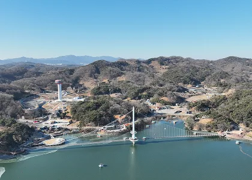
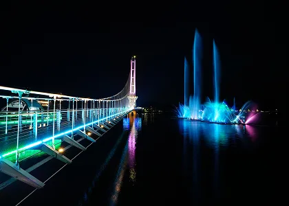
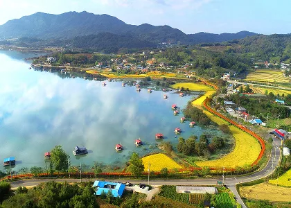
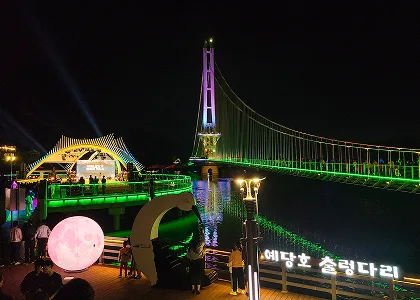
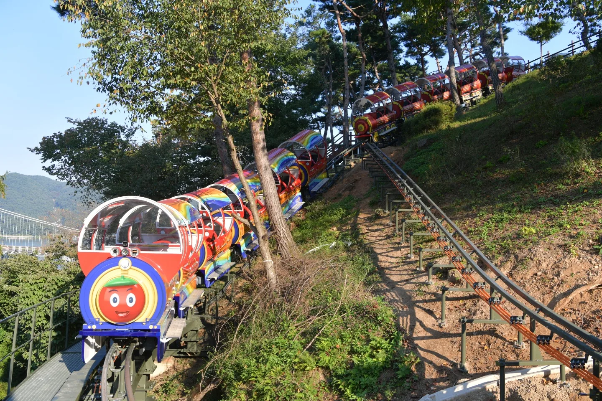
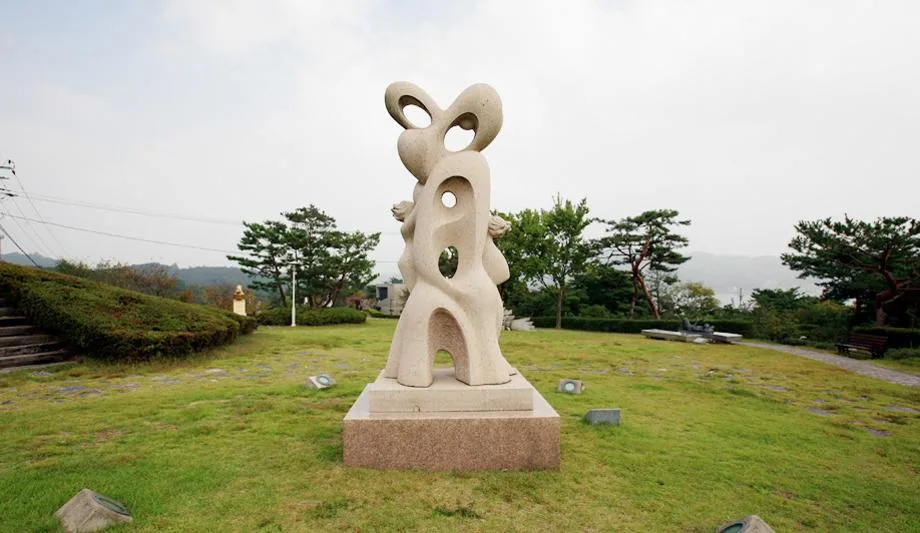
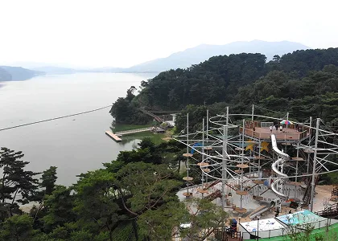

▲ 예당호 출렁다리 항공뷰. 64m 주탑을 중심으로 402m 길이의 케이블이 호수를 가로지른다 ⓒ 예산군

▲ 야간의 예당호 출렁다리와 음악분수. 다리 조명과 분수 물줄기가 함께 어우러진다 ⓒ 예산군
충남 예산군 응봉면, 예당저수지 위에 놓인 예당호 출렁다리는 길이 402m로 국내 출렁다리 가운데서도 손꼽히는 규모를 자랑한다. 호수 한가운데 세운 64m 높이의 주탑을 중심으로 양옆으로 뻗은 흰색 케이블이 마치 커다란 새가 날개를 펼친 듯한 실루엣을 그린다. 2019년 4월 개통 이후 2026년 6월 누적 방문객 1,000만 명을 돌파할 만큼 꾸준히 인기를 끄는 이유는 단순하다. 출렁다리 자체도 볼만하지만, 조각공원·모노레일·음악분수까지 한자리에서 즐길 수 있는 종합 관광지이기 때문이다. 게다가 다리와 조각공원 모두 무료로 운영된다.
1. 402m, 국내 최장급 출렁다리를 건너다

▲ 예당호 저수지 전경. 출렁다리 주변으로 산책로와 들판이 넓게 펼쳐져 있다 ⓒ 예산군
예당호 출렁다리는 2017년 6월 착공해 2019년 4월 개통된 이후 예산군의 대표 관광지로 자리 잡았다. 402m 길이는 국내에서 손꼽히는 규모로, 다리 중앙의 64m 주탑까지 오르내리며 예당호 전경을 감상할 수 있다. 다리 자체가 완만한 곡선을 그리며 흔들리도록 설계돼 있어, 걷는 재미와 함께 적당한 스릴도 느낄 수 있다. 다리 양 끝으로는 조각공원과 산책로인 '느린호수길'이 이어져, 다리만 왕복하고 돌아가기보다는 주변까지 천천히 걸어보는 편을 추천한다.
2. 밤이 되면 피어나는 음악분수

▲ 예당호 출렁다리 야간 명소 '예당호반 문화마당' 인근 조형물과 조명 ⓒ 예산군
예당호를 낮과 밤에 각각 한 번씩 찾아볼 가치가 있다고 평가받는 가장 큰 이유는 음악분수다. 길이 96m, 폭 16m 규모에 최대 분사 높이가 110m에 달하는 부력식 분수로, 그러데이션 LED 조명을 활용한 색색의 연출이 출렁다리 야간 조명과 어우러진다. 3~11월에는 낮에도 가동되며, 12~2월에는 분수 대신 레이저영상쇼로 대체 운영된다. 매주 월요일은 시설점검으로 쉰다.
| 시기 | 평일(화~금) | 주말·공휴일 |
|---|---|---|
| 음악분수(3~11월) | 11:00·14:00·17:00·20:30 | 11:00·14:00·17:00·19:00·20:30 |
| 레이저영상쇼(12~1월) | 17:30·18:30·19:30 | 17:30·18:30·19:30 |
| 레이저영상쇼(2월) | 18:30·19:30 | 18:30·19:30 |
※ 매주 월요일은 시설점검으로 음악분수·레이저영상쇼 모두 운영하지 않는다. 기상 상황이나 점검 일정에 따라 회차가 바뀔 수 있어 방문 전 공식 홈페이지 확인이 안전하다.
가을 여행이라면 낮 시간대(11·14·17시)에도 짧게 볼 수 있지만, 조명과 물줄기가 가장 화려하게 어우러지는 시간은 평일 저녁 8시 30분, 주말 저녁 7시·8시 30분이다. 다리 조명과 분수가 동시에 눈에 들어오는 각도를 찾으려면 시작 10~15분 전에 도착하는 편이 좋다.
3. 모노레일(스카이바이크)로 호수를 한 바퀴

▲ 2022년 개통한 예당호 모노레일. 숲길 레일을 따라 호수와 출렁다리를 조망할 수 있다 ⓒ 예산군
2022년 10월 문을 연 예당호 모노레일(현지에서는 스카이바이크로도 불린다)은 1.32km 순환 코스를 약 22분에 걸쳐 도는 관광형 궤도차다. 숲길을 오르내리며 호수와 조각공원, 음악분수 일대를 한눈에 내려다볼 수 있어 출렁다리와는 또 다른 시점의 예당호를 즐길 수 있다. 요금은 성인(어른) 8,000원, 청소년 7,000원, 어린이 6,000원이며, 예산군민은 신분증 제시 시 50% 할인이 적용된다. 16인 이상 단체는 성인 6,000원·청소년 5,000원으로 낮아지고, 만 65세 이상·장애인·국가유공자는 증빙서류 지참 시 5,000원에 이용할 수 있다. 온라인 사전 예약은 불가능하며 당일 현장 발권만 가능하다는 점은 미리 알아두는 편이 좋다.
4. 조각공원과 놀이시설, 가족 단위 코스

▲ 2004년 조성된 예당호 조각공원. 6,789㎡ 부지에 30여 점의 작품이 전시돼 있다 ⓒ 예산군

▲ 예당호 인근 숲속 어드벤처 시설. 짚라인·구름다리 등을 갖춰 아이들과 함께 즐기기 좋다 ⓒ 예산군
예당호 출렁다리 일대에는 조각공원, 오토캠핑장, 족구장 같은 부대시설이 함께 조성돼 있다. 저수지를 따라 걷는 산책로 '느린호수길'(총 7km, 수문~출렁다리~예당호중앙생태공원 구간)과 숲속 어드벤처 시설까지 갖춰져 있어, 출렁다리와 음악분수만 보고 돌아가기보다 반나절 이상 머무는 일정을 짜기에도 부족함이 없다. 특히 어린 자녀를 동반한 가족 단위 방문객이라면 모노레일과 숲속 놀이시설을 오전에, 음악분수를 저녁에 배치하는 식으로 하루 코스를 구성하기 좋다.
예당호에서 차로 25~30분 거리에는 백제 시대 고찰 수덕사와 윤봉길 의사를 기리는 사당 충의사가 있어, 문화유산 답사와 묶는 당일 코스로도 손색없다. 덕산온천 지구도 인접해 있어 출렁다리·음악분수로 하루를 보낸 뒤 온천에서 마무리하는 1박 코스를 짜는 여행객도 많다.
5. 접근 정보 — 주소·요금·운영시간
예당호 출렁다리와 조각공원은 입장료·주차료 모두 무료다. 다리 운영시간은 3월부터 11월까지 오전 9시부터 밤 10시까지, 12월부터 2월까지는 오전 9시부터 밤 8시까지다. 자가용을 이용하면 다리 바로 옆 주차장을 이용할 수 있으며, 성수기 저녁 음악분수 시간대에는 주차장이 붐빌 수 있으니 여유 있게 도착하는 편이 좋다.
| 주소 | 충남 예산군 응봉면 예당관광로 158 |
|---|---|
| 출렁다리 입장료 | 무료 |
| 출렁다리 운영시간 | 3~11월 09:00~22:00 / 12~2월 09:00~20:00 |
| 휴무 | 매월 첫째 주 월요일 정기점검(음악분수·레이저영상쇼는 매주 월요일 미가동) |
| 모노레일 요금 | 성인 8,000원 · 청소년 7,000원 · 어린이 6,000원(예산군민 50% 할인, 현장 발권만 가능) |
| 음악분수(3~11월 평일) | 11:00·14:00·17:00·20:30 |
| 주차 | 출렁다리 인근 주차장 무료 |
실시간 운영 정보와 모노레일 예약 관련 공지는 예당호 출렁다리 공식 홈페이지에서 확인할 수 있다. 바로가기
✅ 예당호 출렁다리 여행, 이것만은 확인하세요
· 출렁다리·조각공원 입장료 무료, 주차도 무료
· 음악분수는 3~11월 하루 4~5회(평일 20:30, 주말 19:00·20:30이 가장 화려함), 매주 월요일 미가동
· 모노레일(스카이바이크)은 온라인 예약 불가, 현장 발권만 가능
· 다리 운영시간은 3~11월 09:00~22:00, 매월 첫째 주 월요일 정기점검
· 낮엔 다리·모노레일, 밤엔 음악분수로 하루 코스 구성 추천
6. 정리
예당호 출렁다리는 낮과 밤의 표정이 완전히 다른 여행지다. 낮에는 402m 다리와 모노레일로 호수를 둘러보고, 해가 지면 조명 켜진 다리 옆으로 솟아오르는 음악분수를 즐길 수 있다. 입장료와 주차가 모두 무료인 만큼 접근성도 좋아, 가을철 당일치기 혹은 1박 코스로 부담 없이 계획할 만하다.